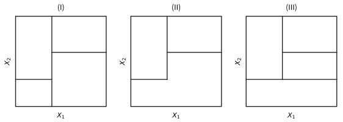

第 1 題
Select which of the following partitions cannot result from recursive binary splitting.

(A) I only
(B) II only
(C) III only
(D) I, II, and III
(E) The answer is not given by (A), (B), (C), or (D)
看中文題意（不影響作答）
上圖三種區域分割中，哪些不可能由遞迴二元分割產生？
答案
(B)
解析
遞迴二元分割每次把一個長方形沿某條座標軸切成兩個長方形，所以最後每個區域都必須是長方形，而且每條切線都要貫穿它所在的那個長方形。
- (I)：先切 \(X_1\)，左右兩塊各再切 \(X_2\)。可以。
- (III)：先切 \(X_2\)（下方一條貫穿全寬），上方再切 \(X_1\)，右上再切 \(X_2\)。可以。
- (II)：左邊那條直線沒有貫穿到底，下方形成一塊 L 形區域，不是長方形。不可能（第 16 章 16.1 節）。
對應章節